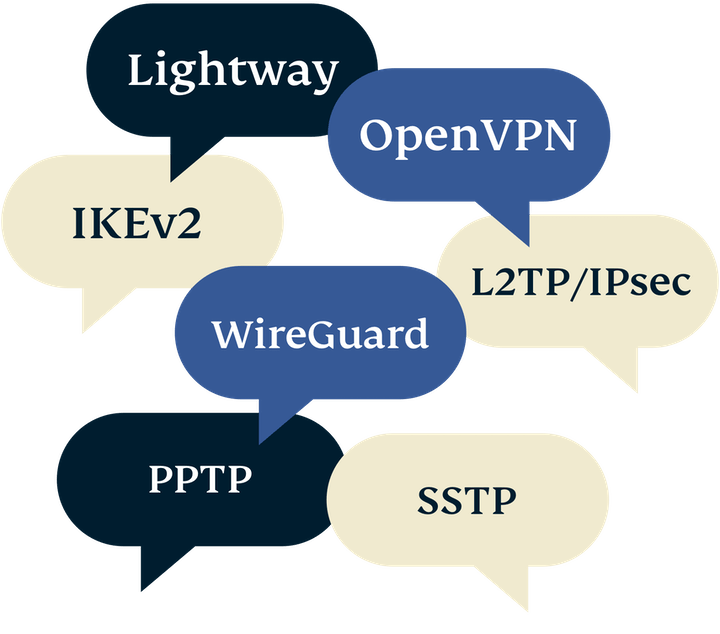

Как работает VPN?
Чтобы понять, как работает сеть VPN, нужно сначала понять, как работает интернет-соединение без нее.
Без VPN
Когда вы заходите на сайт без VPN, вы подключаетесь к этому сайту через вашего интернет-провайдера. Провайдер присваивает вам уникальный IP-адрес, который используется для вашей идентификации на сайте. Поскольку ваш провайдер обрабатывает и перенаправляет весь ваш трафик, он может видеть, какие сайты вы посещаете. Использование уникального IP-адреса позволяет легко идентифицировать все ваши действия онлайн.
С VPN
Когда вы подключаетесь к Интернету через VPN-приложение на вашем устройстве (его еще называют VPN-клиентом), то между вашим устройством и VPN-сервером устанавливается безопасное соединение. Ваш трафик всё еще проходит через вашего провайдера, но он больше не может его прочитать или увидеть конечный пункт назначения. Веб-сайты, которые вы посещаете, больше не видят ваш исходный IP-адрес, а видят только IP-адрес VPN-сервера, который совместно используется многими другими пользователями и регулярно меняется.
Вот несколько связанных с VPN ключевых понятий, которые помогут вам понять, как работает VPN и какие преимущества дает этот сервис:
Проксирование
VPN-сервер действует как прокси-сервер, или посредник, для всего, что вы делаете онлайн: вместо вашего реального IP-адреса и местоположения сайты, которые вы посещаете, видят только IP-адрес и местоположение VPN-сервера.
Это повышает вашу анонимность в Интернете.
Аутентификация
Создание защищенного соединения — сложная задача, решаемая с помощью продвинутых математических методов, реализуемых в процессе аутентификации.
После аутентификации VPN-клиент и VPN-сервер твердо знают, что они общаются только друг с другом и больше ни с кем.
Туннелирование
Сети VPN также защищают соединение между клиентом и сервером с помощью туннелирования и шифрования.
Туннелирование — это процесс, при котором каждый пакет данных помещается в другой пакет данных. Это затрудняет третьим лицам доступ к трафику во время его перемещения.
Шифрование
Данные внутри туннеля шифруются таким образом, что только предполагаемый получатель может их расшифровать. Это позволяет полностью скрыть содержимое вашего интернет-трафика даже от вашего интернет-провайдера.
Узнайте подробнее о VPN-шифровании.VPN-протоколы
VPN-протоколы — это методы, с помощью которых ваше устройство подключается к VPN-серверу. Некоторые протоколы обеспечивают высокую скорость, некоторые повышают безопасность, а некоторые просто лучше работают при определенных сетевых условиях.
Большинство VPN-сетей используют стандартный набор протоколов, но компания ExpressVPN разработала протокол Lightway, который превосходит их все по скорости, надежности и безопасности. Попробуйте и убедитесь сами. Узнайте больше о Lightway.
ExpressVPN автоматически выбирает лучший протокол для вашей сети, но вы также можете выбрать его вручную.
В настоящее время популярны следующие VPN-протоколы:
VPN-протоколы
VPN-протоколы — это методы, с помощью которых ваше устройство подключается к VPN-серверу. Некоторые протоколы обеспечивают высокую скорость, некоторые повышают безопасность, а некоторые просто лучше работают при определенных сетевых условиях.
Большинство VPN-сетей используют стандартный набор протоколов, но компания ExpressVPN разработала протокол Lightway, который превосходит их все по скорости, надежности и безопасности. Попробуйте и убедитесь сами. Узнайте больше о Lightway.
ExpressVPN автоматически выбирает лучший протокол для вашей сети, но вы также можете выбрать его вручную.
В настоящее время популярны следующие VPN-протоколы:
VPN-протоколы
VPN-протоколы — это методы, с помощью которых ваше устройство подключается к VPN-серверу. Некоторые протоколы обеспечивают высокую скорость, некоторые повышают безопасность, а некоторые просто лучше работают при определенных сетевых условиях.
Большинство VPN-сетей используют стандартный набор протоколов, но компания ExpressVPN разработала протокол Lightway, который превосходит их все по скорости, надежности и безопасности. Попробуйте и убедитесь сами. Узнайте больше о Lightway.
ExpressVPN автоматически выбирает лучший протокол для вашей сети, но вы также можете выбрать его вручную.